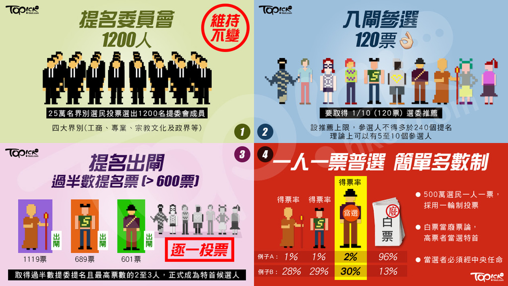
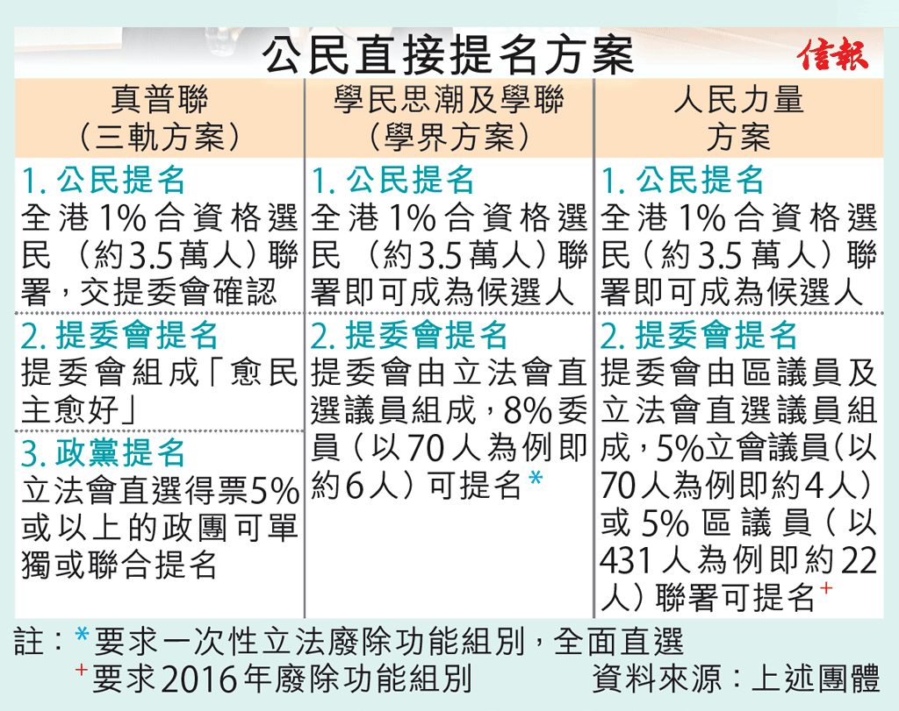

| 2007.12 | 全國人大常委會宣佈香港可於2017年普選行政長官,在行政長官普選後,即2020年,立法會全部議員也可以由普選產生 |
|---|---|
| 2010.8 | 全國人大常委會通過行政長官及立法會產生辦法修正案草案,已經全部完成整個修改行政長官和立法會產生方法的五步曲法律程序 |
| 2013.12 | 政務司司長林鄭月娥宣佈就2016年立法會選舉和2017年行政長官產生辦法展開政改方案前為期5個月的公眾諮詢,他與律政司司長袁國強及政制及內地事務局局長譚志源組成政改三人組處理政改事宜 |
| 2014.6 | 由和平佔中組織委託香港大學民意調查機構就三個含有公民提名元素的方案發起全港投票行動,結果有近80萬人參與投票 |
| 2014.7 | 由幫港出聲召集人周融發起的保普選反佔中大聯盟,舉行為期一個月的反佔中簽名運動,並聲稱獲得逾百萬個簽名支持 |
| 2014.7 | 政府公佈首輪諮詢報告,並同時啟動政改首部曲,向北京政府提交報告,報告建議特首人選要愛國愛港,提名委員會參照選委會四大界別比例組成,提委會產生辦法沿用現時選委會產生辦法等為主流意見 |
| 2014.8 | 全國人大常委會公佈簡稱八三一決定,如果特首普選未獲法定程序通過,2017年特首選舉會繼續沿用2012年特首選舉產生辦法 |
| 2014.9 | 香港學界發起大專及中學生罷課,及後有集會人直闖入香港政府總部內,學民思潮召集人黃之鋒等人被捕,引來大批民眾前赴政府總部外聲緩,和平佔中發起人之一戴耀廷形容對話之路已經走盡,正式啟動佔領中環及公民抗命行動,佔領行動持續79日後結束 |
| 2015.1 | 政府就行政長官普選辦法正式展開第二輪諮詢,為期兩個月 |
| 2015.4 | 香港政務司司長林鄭月娥在香港立法會宣讀聲明,公佈香港普選政改諮詢報告及方案,根據方案,香港小文章首次可以一人一票選出特首,但候選人則需有1200人組成的提名委員會篩選通過 |
| 2015.6 | 香港立法會以8票贊成28票反對否決了香港特區政府提出的政改方案 |
普選定義
凡屬公民,不受無理限制,均應有權利及機會:在真正,定期之選舉中投票及被選,選舉權必須普及而平等,選舉應以無記名投票發行之,以保證選民意識之自由表現普選是提名,參選,被選,投票等權利和機會,須符不受無理限制,普及而平等及確保選民意識自由表現的原則
| 問題/爭議 | 內容 |
|---|---|
| -普選定議不符(不普及,不平等) -無代表性 | -1200選委(小圈子選舉) -不普及:不是所有人能參與選舉過程 -不平等:每人選票數量和票值不同 |
| -中央對選委會干預 | -親中派特首出選,泛民背景得票較少 |
香港的經濟發展方案必須走完五部曲,包括先由特首向人大常委會提出修改有關的選舉辦法,並不對人大常委會的確定,才可開展修改程序,而最終的方案也必須交人大常委會批准或備案,修改方可生效
時任政務司司長林鄭月娥就公民提名方案予以否定,她總結行政長官人選須愛國愛港,而基本法現有的相關條文已充分反映這要求,另外,主流意見認同基本法明確規定提名權只授予提名委員會,提名委員會擁有實質提名權,被提名權不可否直接或間接地削弱或繞過,較多意見亦認同提名委員會應參照選舉委員會四大界別同比例組成,以符合廣泛代表性的要求
8.31方案